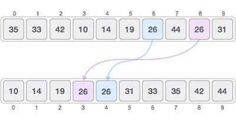

Sorting refers to arranging data in a particular format. Sorting algorithm specifies the way to arrange data in a particular order. Most common orders are numerical or lexicographical order.
Importance of sorting lies in the fact that data searching can be optimized to a very high level if data is stored in a sorted manner. Sorting is also used to represent data in more readable formats. Some of the examples of sorting in real life scenarios are following.
Telephone Directory − Telephone directory keeps telephone no. of people sorted on their names. So that names can be searched.
Dictionary − Dictionary keeps words in alphabetical order so that searching of any work becomes easy.
Sorting algorithms may require some extra space for comparison and temporary storage of few data elements. These algorithms do not require any extra space and sorting is said to be happened in-place, or for example, within the array itself. This is called in-place sorting. Bubble sort is an example of in-place sorting.
But in some sorting algorithms, the program requires space which more than or equal to the elements being sorted. Sorting which uses equal or more space are called not-in-place sorting. Merge-sort is an example of not-in-place sorting.
If a sorting algorithm, after sorting the contents, does not change the sequence of similar content in which they appear, it is called stable sorting.

If a sorting algorithm, after sorting the contents, changes the sequence of similar content in which they appear, it is called unstable sorting.
Stability of an algorithm matters when we wish to maintain the sequence of original elements, like in a tuple for example.
A sorting algorithm is said to be adaptive, if it takes advantage of already 'sorted' elements in the list that is to be sorted. That is, while sorting if the source list has some element already sorted, adaptive algorithms will take this in to account and will try not to re-order them.
A non-adaptive algorithm is one which does not take into account the elements which are already sorted. They try to force every single element to be re-order to confirm their sortedness.
Some terms are generally coined while discussing sorting techniques, here is a brief introduction to them −
A sequence of values is said to be in increasing order, if the successive element is greater than the previous one. For example, 1, 3, 4, 6, 8, 9 are in increasing order, as every next element is greater than the previous.
A sequence of values is said to be in decreasing order, if the successive element is less than the current one. For example, 9, 8, 6, 4, 3, 1 are in decreasing order, as every next element is less than the previous.
A sequence of values is said to be in non-increasing order, if the successive element is less than or equal to its previous element in the sequence. This order occurs when the sequence contains duplicate values. For example, 9, 8, 6, 3, 3, 1 are in non-increasing order, as every next element is less than or equal to (in case of 3) but not greater than the any previous element.
A sequence of values is said to be in non-decreasing order, if the successive element is greater than or equal to its previous element in the sequence. This order occurs when the sequence contains duplicate values. For example, 1, 3, 3, 6, 8, 9 are in non-decreasing order, as every next element is greater than or equal to (in case of 3) but not less than the previous one.